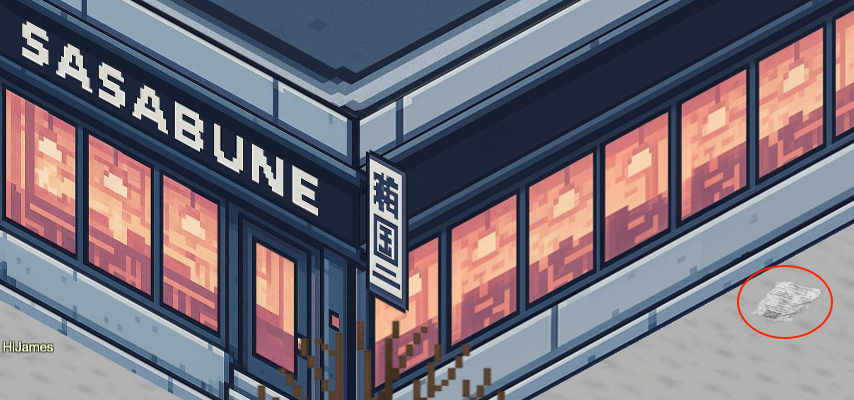
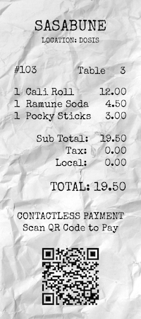
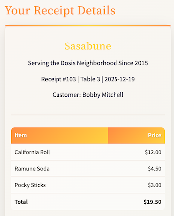

IDORable Bistro

Discover how a discarded receipt can expose a restaurant's entire order history through an Insecure Direct Object Reference vulnerability. This challenge demonstrates why sequential database identifiers in public APIs are a recipe for disaster and how easily they can be manipulated to leak sensitive customer data.
Challenge Overview
The investigation begins with the image of physical receipt found outside (see image above) of the Sasabune restaurant (the name of some real-world Japanese restaurants). It contained a QR code for payment. Following this code leads to a digital view of a past order and serves as our entry point for analyzing the application's data retrieval methods.

Solution Steps
We start by scanning the QR code on the receipt. Google Image search allows us to scan the QR code online without needing a mobile device. You can even use the link to the image so you don't have to download/upload the file. The QR code decodes to: https://its-idorable.holidayhackchallenge.com/receipt/i9j0k1l2, which takes us to an online order receipt page.

The HTML source reveals a script that fetches receipt details based on a
receipt ID via an API call to
/api/receipt?id=.
// Initial receipt ID
let receiptId = '103';
// Function to fetch and display receipt details
function fetchReceiptDetails(id) {
// Add a small delay for dramatic effect
setTimeout(function() {
fetch(`/api/receipt?id=${id}`)
.then(response => {
if (!response.ok) {
throw new Error('Receipt not found');
}
return response.json();
})
By changing the ID parameter in the URL, we can access other receipts. This is a classic example of an Insecure Direct Object Reference (IDOR) vulnerability, where sequential IDs allow unauthorized access to data.
This command uses a loop to send requests for receipt IDs 1 through 200, saving the output to a
file named curl.out. After collecting the data, we can analyze it to find the gnome's
identity.
seq 1 200 | while read index; do curl -s https://its-idorable.holidayhackchallenge.com/api/receipt?id="$index" >> curl.out; done &
After checking various IDs, we find that ID 139 corresponds to a customer who requested "frozen sushi," the gnome in disguise mentioned in the briefing.
{
"customer": "Bartholomew Quibblefrost",
"id": 139,
"items": [
{
"name": "Frozen Roll (waitress improvised: sorbet, a hint of dry ice)",
"price": 19.0
}
],
"note": "Insisted on increasingly bizarre rolls and demanded one be served frozen. The waitress invented a 'Frozen Roll' on the spot with sorbet and a puff of theatrical smoke. He nodded solemnly and asked if we could make these in bulk.",
"paid": true,
"table": 14,
"total": 19.0
}Easter Egg: Fun NPC References in the Receipt Database
While exploring the receipt database, you might notice some amusing references hidden within the customer names, items, and notes. These are nods to real-world individuals and pop culture, adding a layer of humor to the challenge. Here are a few highlights:
The Real-World Creators (Cameos)
Many of these customers are real people, specifically the SANS instructors and Counter Hack team members who build this game every year. The "items" and "notes" reference their real-life personas or specialties.
- ID 107: Ed Skoudis (Founder of Holiday Hack Challenge)
- Items: "Penetration Test Platter," "Fedora-Brim Bento."
- Note: Mentions his "classic fedora" (he always wears one).
- ID 108: Joshua Wright (SANS Author/Instructor)
- Items: "Wireless Wonton Soup," "De-auth Dragon Roll."
- Note: Mentions a Flipper Zero and "rick-rolling." Josh is famous for his wireless security research (KillerBee, etc.).
- ID 116: Evan Booth (The "MacGyver" of InfoSec)
- Items: "Deconstructed Dragon Roll."
- Note: "Built a fully functional radio transmitter out of a pair of chopsticks." Evan is famous for building weapons and tools out of airport terminal gift shop items (Terminal Cornucopia).
- ID 119: Tom Hessman (Counter Hack Technical Director)
- Items: "QA Quail Eggs," "Bug Bounty Bento."
- Note: "Left a bug report." He leads the technical development of the challenges, so he deals with QA and bugs constantly.
- ID 117: Chris Elgee (Counter Hack Core Member)
- Items: "NetWars Nigiri."
- Note: References NetWars (the SANS CTF platform he helps run) .
- ID 125: David Chen
- Items: "Rubber Duck Dumplings."
- Note: Explaining the wasabi to his duck. This is a reference to "Rubber Duck
Debugging," where
programmers explain code to a toy duck to find errors.
- ID 112: Mark Devito
- Items: "COBOL-Cured Salmon."
- Note: Complaining the menu wasn't in Fortran. A joke about legacy mainframe programming.
Pop and SANS HHC Culture
- ID 149: Thomas Anderson (Neo from The Matrix)
- Items: "The Matrix Maki," "The One Onigiri."
- Note: Asking if he is in a simulation.
- ID 101: Duke Dosis
- Note: Claims his pet rock is a "certified sushi-grade emotional support animal."
- Duke Dosis is a recurring NPC in the Holiday Hack lore (often associated with the "Dosis" family/corporation).
Side Note: The Illusion of Security
Beyond finding the gnome, I analyzed the URL obfuscation scheme to understand why the developers thought
the system was secure. The URL slug i9j0k1l2 (Receipt 103) follows a predictable
interleaved pattern:
- Receipt 101:
a1b2c3d4(Indices 1, 2, 3, 4) - Receipt 102:
e5f6g7h8(Indices 5, 6, 7, 8) - Receipt 103:
i9j0k1l2(Indices 9, 10, 11, 12)
Based on this pattern, the URL for Receipt 104 should be m3n4o5p6. However, navigating to
/receipt/m3n4o5p6 results in a 404 error, while querying the API directly for
id=104 returns valid data.
Significance: This discrepancy proves that the web frontend relies on a restricted routing table (Security through Obscurity) where only specific "public" receipts are given valid URLs. However, the backend API lacks any authorization controls, allowing direct access to the entire database via simple integer enumeration regardless of whether a public URL exists.
Challenge Reference Material
Challenge Descriptions
Classic Mode Description
Josh has a tasty IDOR treat for you—stop by Sasabune for a bite of vulnerability. What is the name of the gnome?
CTF Mode Description
I need your help with something urgent. A gnome came through Sasabune today, poorly disguising itself as human - apparently asking for frozen sushi, which is almost as terrible as that fusion disaster I had to endure that one time. Based on my previous work finding IDOR bugs in restaurant payment systems, I suspect we can exploit a similar vulnerability here. I was [at a talk recently]( https://www.youtube.com/watch?v=hzrhtHrhwno) and learned some interesting things about some of these payment systems. Let's use that receipt to dig deeper and unmask this gnome's true identity.
Official Hints
- I have been seeing a lot of receipts lying around with some kind of QR code on them. I am pretty sure they are for Duke Dosis's Holiday Bistro. Interesting...see you if you can find one and see what they are all about...
- Sometimes...developers put in a lot of effort to anonymyze information by using randomly generated identifiers...but...there are also times where the "real" ID is used in a separate Network request...
- I had tried to scan one of the QR codes and it took me to somebody's meal receipt! I am afraid somebody could look up anyone's meal if they have the correct ID...in the correct place.